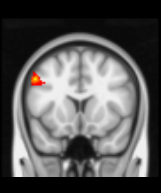
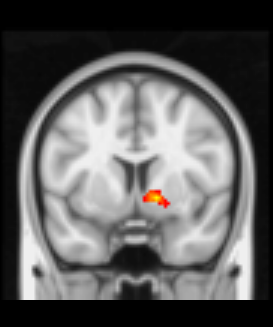

| Cluster | Voxels | Max | X | Y | Z | AAL Label |
| 13 | 783 | 10.1 | 8 | 18 | -26 | Rectus_R |
| 12 | 383 | 9.08 | 52 | -60 | -28 | Cerebellum_Crus1_R |
| 11 | 311 | 9.04 | -10 | 2 | -2 | Pallidum_L |
| 10 | 257 | 10.3 | 34 | -8 | -30 | Hippocampus_R |
| 9 | 253 | 9.13 | -60 | -36 | -24 | Temporal_Inf_L |
| 8 | 241 | 7.9 | 8 | -20 | 48 | Cingulate_Mid_R |
| 7 | 228 | 7.79 | -28 | 10 | 38 | Supp_Motor_Area_L |
| 6 | 228 | 9.56 | -50 | 14 | 38 | Precentral_L |
| 5 | 175 | 8.32 | 40 | 4 | 20 | Insula_R |
| 4 | 152 | 9.87 | 14 | 6 | -4 | Pallidum_R |
| 3 | 131 | 7.9 | 12 | -34 | -6 | Lingual_R |
| 2 | 103 | 8.02 | -24 | 0 | 72 | Frontal_Sup_2_L |
| 1 | 101 | 8.31 | 56 | -34 | -22 | Temporal_Inf_R |
| Cluster | Voxels | Max | X | Y | Z | Label |
| 13 | 783 | 10.1 | x=8 |
y=18 |
z=-26 |
NeuroSynth AALv3 Rectus_R : 26.7% Rectus_L : 19.4% OFCmed_R : 18.2% NA : 9.5% OFCmed_L : 7.6% Frontal_Med_Orb_L : 6.0% Olfactory_L : 5.2% Olfactory_R : 2.6% Frontal_Med_Orb_R : 2.6% OFCant_R : 0.8% OFCant_L : 0.6% ACC_sub_L : 0.3% OFCpost_R : 0.3% Putamen_R : 0.1% HO-cort Subcallosal Cortex : 27.0% Frontal Orbital Cortex : 33.0% Frontal Medial Cortex : 25.0% Frontal Pole : 1.0% Paracingulate Gyrus : 28.0% HO-subcort Right Cerebral Cortex : 13.0% Left Cerebral Cortex : 2.0% Right Cerebral White Matter : 12.0% Left Cerebral White Matter : 1.0% Right Putamen : 17.0% Cerebellum |
| 12 | 383 | 9.08 | x=52 |
y=-60 |
z=-28 |
NeuroSynth AALv3 Cerebellum_Crus1_R : 63.7% Cerebellum_Crus2_R : 13.2% Cerebellum_8_R : 12.1% NA : 10.1% Cerebellum_9_R : 0.5% Cerebellum_6_R : 0.5% HO-cort HO-subcort Cerebellum Right Crus I : 10.0% Right Crus II : 13.0% Right VIIIa : 19.0% Right VIIb : 16.0% Right VIIIb : 22.0% |
| 11 | 311 | 9.04 | x=-10 |
y=2 |
z=-2 |
NeuroSynth AALv3 NA : 28.2% Pallidum_L : 24.2% Caudate_L : 20.8% Putamen_L : 11.4% Thal_VA_L : 8.2% N_Acc_L : 6.9% Thal_VL_L : 0.3% HO-cort Subcallosal Cortex : 27.0% HO-subcort Left Cerebral White Matter : 1.0% Left Caudate : 5.0% Left Pallidum : 7.0% Left Accumbens : 11.0% Left Putamen : 6.0% Left Thalamus : 4.0% Left Cerebral Cortex : 2.0% Left Lateral Ventricle : 3.0% Cerebellum |
| 10 | 257 | 10.3 | x=34 |
y=-8 |
z=-30 |
NeuroSynth AALv3 NA : 37.1% Hippocampus_R : 22.2% Amygdala_R : 14.7% Fusiform_R : 11.1% ParaHippocampal_R : 10.9% Putamen_R : 4.0% HO-cort Parahippocampal Gyrus, anterior division : 34.0% Temporal Fusiform Cortex, posterior division : 38.0% Temporal Fusiform Cortex, anterior division : 37.0% Insular Cortex : 2.0% HO-subcort Right Cerebral White Matter : 12.0% Right Cerebral Cortex : 13.0% Right Amygdala : 20.0% Right Hippocampus : 19.0% Cerebellum |
| 9 | 253 | 9.13 | x=-60 |
y=-36 |
z=-24 |
NeuroSynth AALv3 Temporal_Inf_L : 83.6% NA : 9.9% Temporal_Mid_L : 6.5% HO-cort Inferior Temporal Gyrus, posterior division : 15.0% Middle Temporal Gyrus, posterior division : 12.0% HO-subcort Left Cerebral Cortex : 2.0% Left Cerebral White Matter : 1.0% Cerebellum |
| 8 | 241 | 7.9 | x=8 |
y=-20 |
z=48 |
NeuroSynth AALv3 Cingulate_Mid_R : 61.4% Cingulate_Mid_L : 18.8% Supp_Motor_Area_R : 11.3% NA : 6.8% Supp_Motor_Area_L : 1.7% HO-cort Cingulate Gyrus, anterior division : 29.0% Cingulate Gyrus, posterior division : 30.0% Precentral Gyrus : 7.0% Juxtapositional Lobule Cortex (formerly Supplementary Motor Cortex) : 26.0% HO-subcort Right Cerebral Cortex : 13.0% Right Cerebral White Matter : 12.0% Left Cerebral Cortex : 2.0% Cerebellum |
| 7 | 228 | 7.79 | x=-28 |
y=10 |
z=38 |
NeuroSynth AALv3 Supp_Motor_Area_L : 26.9% Frontal_Sup_Medial_R : 22.9% NA : 19.9% Frontal_Sup_Medial_L : 17.2% Frontal_Mid_2_L : 8.1% Frontal_Sup_2_L : 2.5% Cingulate_Mid_L : 0.8% Frontal_Sup_2_R : 0.8% Cingulate_Mid_R : 0.4% Frontal_Inf_Oper_L : 0.4% HO-cort Paracingulate Gyrus : 28.0% Superior Frontal Gyrus : 3.0% Middle Frontal Gyrus : 4.0% HO-subcort Left Cerebral Cortex : 2.0% Left Cerebral White Matter : 1.0% Right Cerebral White Matter : 12.0% Right Cerebral Cortex : 13.0% Cerebellum |
| 6 | 228 | 9.56 | x=-50 |
 y=14 |
z=38 |
NeuroSynth AALv3 Precentral_L : 60.0% Frontal_Mid_2_L : 23.5% Frontal_Inf_Oper_L : 14.8% NA : 1.6% HO-cort Middle Frontal Gyrus : 4.0% Precentral Gyrus : 7.0% Inferior Frontal Gyrus, pars opercularis : 6.0% HO-subcort Left Cerebral Cortex : 2.0% Left Cerebral White Matter : 1.0% Cerebellum |
| 5 | 175 | 8.32 | x=40 |
y=4 |
z=20 |
NeuroSynth AALv3 NA : 79.1% Insula_R : 16.9% Frontal_Inf_Oper_R : 4.0% HO-cort Insular Cortex : 2.0% Parietal Operculum Cortex : 43.0% Precentral Gyrus : 7.0% HO-subcort Right Cerebral White Matter : 12.0% Right Cerebral Cortex : 13.0% Cerebellum |
| 4 | 152 | 9.87 | x=14 |
 y=6 |
z=-4 |
NeuroSynth AALv3 NA : 38.5% Pallidum_R : 33.8% N_Acc_R : 14.7% Putamen_R : 10.4% Caudate_R : 2.5% HO-cort HO-subcort Right Cerebral White Matter : 12.0% Right Pallidum : 18.0% Right Putamen : 17.0% Right Accumbens : 21.0% Right Cerebral Cortex : 13.0% Right Caudate : 16.0% Cerebellum |
| 3 | 131 | 7.9 | x=12 |
y=-34 |
z=-6 |
NeuroSynth AALv3 Lingual_R : 30.8% NA : 25.7% Hippocampus_R : 21.7% Precuneus_R : 10.0% Cerebellum_4_5_R : 3.7% Thal_PuI_R : 2.9% Thal_PuM_R : 2.2% Calcarine_R : 1.5% ParaHippocampal_R : 1.4% HO-cort Parahippocampal Gyrus, posterior division : 35.0% Lingual Gyrus : 36.0% Cingulate Gyrus, posterior division : 30.0% HO-subcort Right Cerebral Cortex : 13.0% Right Thalamus : 15.0% Right Hippocampus : 19.0% Right Cerebral White Matter : 12.0% Brain-Stem : 8.0% Cerebellum Right V : 4.0% Right I-IV : 2.0% |
| 2 | 103 | 8.02 | x=-24 |
y=0 |
z=72 |
NeuroSynth AALv3 Frontal_Sup_2_L : 95.4% Precentral_L : 4.6% HO-cort Superior Frontal Gyrus : 3.0% Precentral Gyrus : 7.0% Middle Frontal Gyrus : 4.0% HO-subcort Left Cerebral Cortex : 2.0% Cerebellum |
| 1 | 101 | 8.31 | x=56 |
y=-34 |
z=-22 |
NeuroSynth AALv3 Temporal_Inf_R : 99.1% NA : 0.9% HO-cort Inferior Temporal Gyrus, posterior division : 15.0% Middle Temporal Gyrus, posterior division : 12.0% Inferior Temporal Gyrus, temporooccipital part : 16.0% HO-subcort Right Cerebral Cortex : 13.0% Right Cerebral White Matter : 12.0% Cerebellum |